The ships
Every ship is a 36-frame sprite — frame 00 nose-up, 10° clockwise per frame — plus the plugin's target, shipyard, comm and thumbnail pictures. Three sets: the original for Escape Velocity, the larger, re-rendered fleet for EV Override, and two ships Paul rendered for konex.
ConEx 1.2 · 1997 · Escape Velocity — 10 ships
-
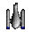
Small Pin
-
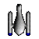
Medium Pin
-
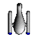
Large Pin
-
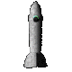
Dart
-
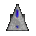
Defender
-
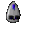
Gryphon
-
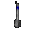
Trident
-
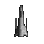
Necromancer
-
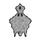
Yodacon
-
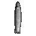
Tomaquad


ConEx Override 1.0 · 1998 · EV Override — 1 new ship
Override re-rendered the 1997 fleet larger and added one new hull, the Callisto. The re-renders are
the same designs, so only the Callisto is shown; the others are still in the pack under override/ships/: Small Pin, Large Pin, Dart, Defender, Gryphon, Trident, Necromancer, Yodacon, Tomaquad, 1/4 Defender.
-
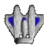
Callisto


konex · 2005 — 2 ships
Two more ships Paul Richeson rendered, first published in konex, Joshua Bussdieker's C++/OpenGL remake; rehosted from konex with their target, shipyard and comm pictures.
-
Advisor
-
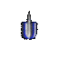
Citrus


Use it in your project
No build step, no npm. Pick a way to reach the files; the library finds the rest relative to itself.
1 · Vendor the folder
Clone or copy the whole pack (with LICENSE) into your site, and use relative paths.
<script type="module" src="vendor/yodacon-ship-pack/lib/yodacon-ship-pack.js"></script>2 · jsDelivr, pinned
A release tag never changes; CORS headers included, so WebGL works.
<script type="module" src="https://cdn.jsdelivr.net/gh/yodacon/yodacon-ship-pack@v2.0.0/lib/yodacon-ship-pack.js"></script>3 · Link to yodacon.org
The newest release, served from the project's own site.
<script type="module" src="https://yodacon.org/ship-pack/lib/yodacon-ship-pack.js"></script>A sprite in HTML: <yodacon-ship>
<yodacon-ship ship="yodacon" spin></yodacon-ship>
<yodacon-ship ship="dart" edition="override" heading="90" scale="1"></yodacon-ship>Attributes: ship, edition (conex | override),
heading, scale, spin, base. All live.
Canvas 2D: drawShip()
import { loadShip, drawShip } from "https://cdn.jsdelivr.net/gh/yodacon/yodacon-ship-pack@v2.0.0/lib/yodacon-ship-pack.js";
const ship = await loadShip("conex", "yodacon");
drawShip(ctx, ship, headingDeg, x, y, 2); // centred, pixelatedExamples — one ship, one framework, one page each
- Plain DOM + CSS sprite —
background-position, no canvas - Canvas 2D game loop — ~80 lines with
drawShip - The
<yodacon-ship>element — every ship spinning, attribute playground - three.js 0.160.0 — textured plane and billboard sprite, with the UV math
- Phaser 3.80.1 — spritesheet, Arcade physics,
pixelArt: true - PixiJS 8.6.6 — one texture per frame, ticker flight
- The demo game · Library API reference · Examples index
Download
Need only one edition? conex/ (1997) and override/ (1998) are each
self-contained: ships, weapon, pictures and the original readme. Copy the one you want, with LICENSE.
The original archives
- 792_ConEx12.sit.hqx — ConEx 1.2, BinHex as Ambrosia served it; unpacked: ConEx 1.2.sit
- 2437_ConExOverride.sit.hqx — ConEx Override 1.0; unpacked: ConEx Override1.0.0.sit
Checksums of every file are in manifest.json and sources/README.md.
Clone or fork
Clone a release
git clone --branch v2.0.0 https://github.com/yodacon/yodacon-ship-packAs a git submodule
git submodule add https://github.com/yodacon/yodacon-ship-pack vendor/yodacon-ship-packFork it on GitHub to change the art —
keep LICENSE and the credit line.
jsDelivr, pinned
https://cdn.jsdelivr.net/gh/yodacon/yodacon-ship-pack@v2.0.0/lib/yodacon-ship-pack.js
https://cdn.jsdelivr.net/gh/yodacon/yodacon-ship-pack@v2.0.0/conex/ships/yodacon/sheet-alpha.png
https://cdn.jsdelivr.net/gh/yodacon/yodacon-ship-pack@v2.0.0/catalog.jsonSelf-host
It's all static files. Serve the folder from any path, with anything:
cd yodacon-ship-pack && python3 -m http.server 8000
# → http://localhost:8000/ and http://localhost:8000/demo/GPL-2.0, in plain words
© 1997–1998 Paul Richeson. Licensed GPL-2.0-or-later.
Use the ships in anything — free or paid — and change them as you like. Two conditions:
credit Paul Richeson (ConEx) and the pack, and keep the art free: if you
distribute the art, it goes out under GPL-2.0-or-later with the LICENSE file.
A game that builds the art into itself should be GPL-compatible too. The simplest safe routes: license
your project under the GPL, or ship the pack as a separate, unmodified, vendored folder with its
LICENSE beside it.
In one line: your project must be GPL-compatible if it builds the art in, or keep the pack as
a separate vendored folder with LICENSE and credit.
Not legal advice — see the GPL FAQ and the full licence text.
The credit line:
Ships from the Yodacon Ship Pack by Paul Richeson (ConEx, 1997), GPL-2.0-or-later — https://github.com/yodacon/yodacon-ship-packWhere they came from
- 1997ConEx 1.2 — Paul Richeson's plugin for Ambrosia Software's Escape Velocity: ten ships for the government of Consolidated Express.
- 1998ConEx Override 1.0 — the fleet rebuilt for EV Override: larger sprites, and a new hull, the Callisto.
- 1998ConEx GL — Joshua Bussdieker's first standalone ConEx, in C and OpenGL, kept in a private repository before konex. No code survives in public.
- 2005konex — Joshua Bussdieker's C++/OpenGL remake, which took Override's ten hulls as its cast, plus Advisor and Citrus, two more ships rendered by Paul Richeson.
- 2026Gonex — a Go/Ebitengine port of konex that restores ConEx's own game.
- 2026This pack — built by Yodacon (yodacon.org).
The originals, rehosted
- sources/ev/792_ConEx12.sit.hqx — ConEx 1.2
- sources/ev/793_ConEx12u.sit.hqx — the 1.1 → 1.2 updater
- sources/evo/2437_ConExOverride.sit.hqx — ConEx Override 1.0
| Title and Description | Category | Author | Date | Rating | Votes | Downloads |
|---|---|---|---|---|---|---|
| ConEx12.sit (1.10 MB) | Plugins | Anonymous | 1999/12/04 | 4.00 | 4 | 3400 |
| ConEx12u.sit (143.00 kB) | Plugins | Anonymous | 1999/12/04 | 0.00 | 0 | 1610 |
| ConExOverride.sit (2.70 MB) | Plugins | Anonymous | 1998/09/26 | 1.75 | 12 | 3919 |


Back-references
- Cythera Guides — Ambrosia EV add-ons archive
- Cythera Guides — Ambrosia EV Override add-ons archive
- Ambrosia's own download of ConEx 1.2 (Wayback, 13 Apr 2013) — byte-identical to the rehosted copy
- Ambrosia's EV add-on library (Wayback, 31 May 2000; capture)
- Ambrosia's EV Override add-ons (Wayback, 2002)
- Ambrosia's FTP server (Wayback, 5 Dec 1998; capture)


Escape Velocity is Ambrosia Software's. The pack contains only Paul Richeson's work; Ambrosia's logo, which the plugins carried, is left out.
How they were made
From the ConEx 1.2 readme — The stuff I used to make this plugin, in order from most important to least important
:
- Infini-D
- to design the ships
- EV-Edit
- to make everything except missions
- Schmelta-V
- to make missions
- ResEdit
- to renumber resources and fix what EV-Edit broke
- GraphicConverter
- to convert all images to PICT and make the target graphics
- Make spïn
- to gather the 36 individual PICT files into sprites and masks
- an Iomega Zip drive
- to store all the files
- the Escape Velocity Data file
- for its TMPL resources, so ResEdit could edit
- Escape Velocity
- to test
- DOCMaker
- for the readme
- Bryce 2
- for the landing screens
The original readmes: ConEx 1.2 · ConEx Override 1.0.
In 2026 they were extracted with the pack's own pure-Python tools (tools/: BinHex, StuffIt 5 Arsenic and classic method 13, resource forks, QuickDraw PICT).
Who's flying them
#1 Gonex — the Go port of konex with the ConEx trade game restored — flies 13 / 13 designs: the 1997 originals and konex's cast, which is ConEx Override's art plus Advisor and Citrus.
The leaderboard counts distinct ship designs out of thirteen: the ten 1997 hulls, the Callisto, Advisor and Citrus (the 1/4 Defender reuses the Defender's art).
Made with it: example projects
Complete games built on these sprites, to play and to take apart. Each one is a single folder of plain HTML, CSS and JavaScript with no build step; copy one and start changing it.
-
Canvas + DOM trading
ConEx Courier
Escape Velocity in miniature: five systems, five goods, courier missions, pirates flying the Override hulls and a shipyard of the ten 1997 ships.
-
DOM card game
Fleet Tactics
Draft a fleet within a budget and fight card by card; hull, firepower and initiative come from each ship's 1997 record.
-
Canvas arcade
Orbital Defence
Hold a planet against waves of ConEx ships: aim its cannon, buy Advisor patrols, repair between waves.
- All the projects, including the three.js Hangar, Fleet Flyby, Shipyard and DOM Dogfight
- The examples: one technique each (DOM, Canvas, a web component, three.js, Phaser 3, PixiJS), each with a tutorial note on how it works